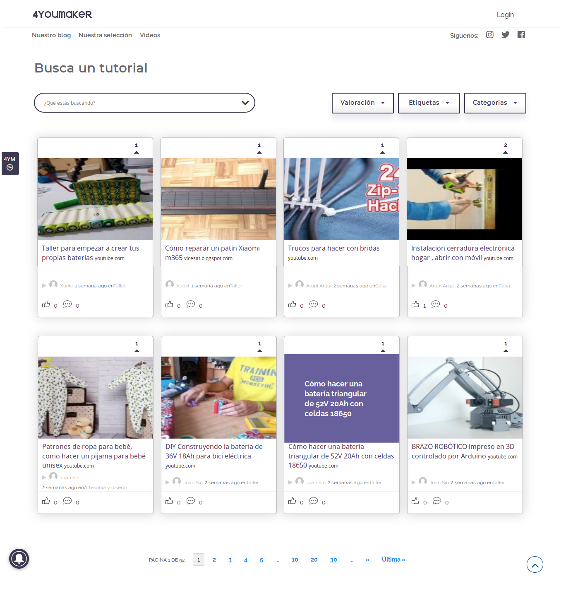
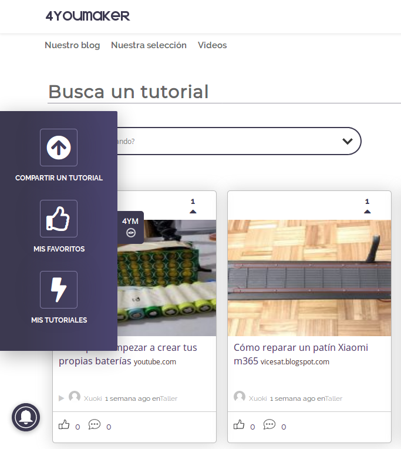
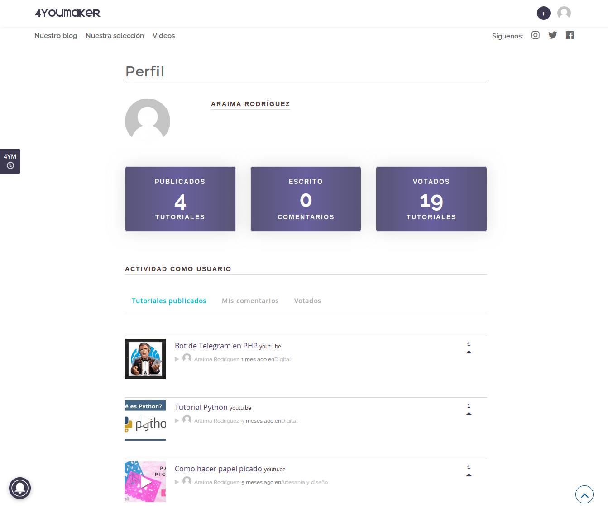
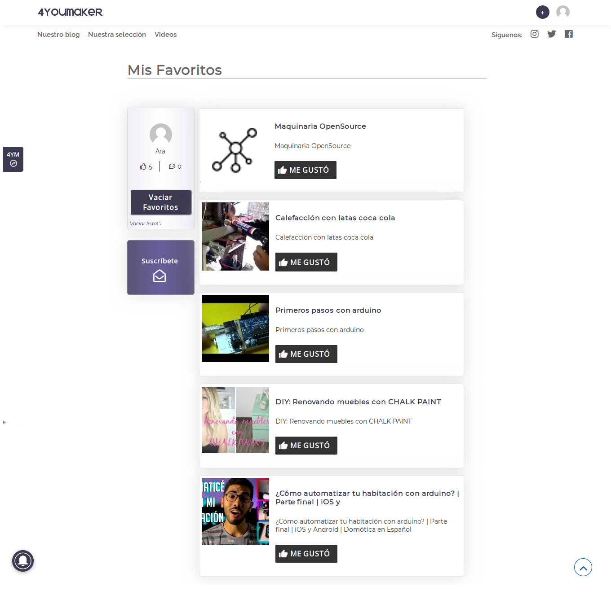
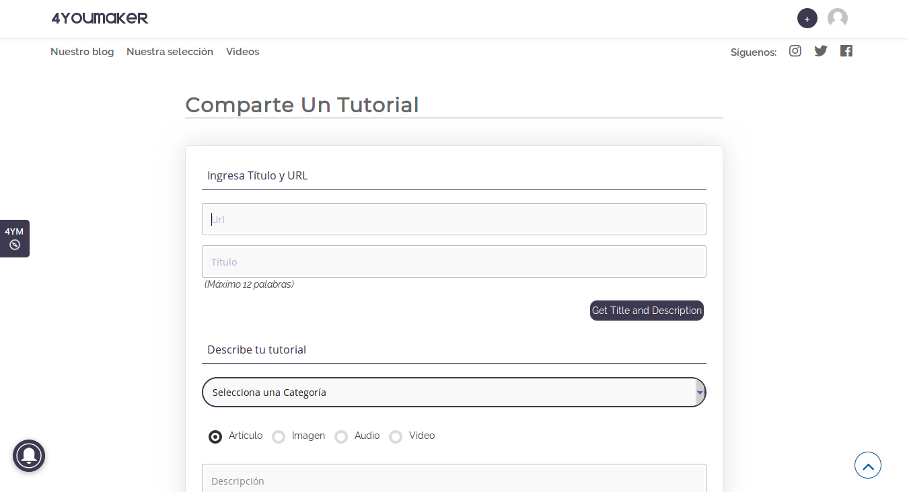
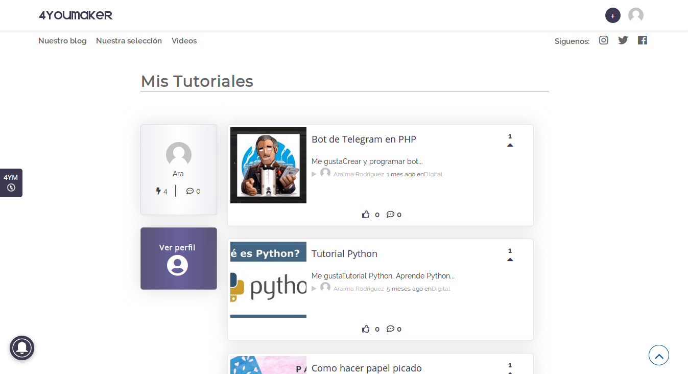

AR
4YOUMAKER
Red social dedicada a la publicación y valoración de tutoriales
4youmaker.com
[ HTML5 / CSS / PHP / JAVASCRIPT / AJAX / WORDPRESS ]
Icon set
Fuente: Font Awesome Icons
Layouts


Perfiles de usuario
 
 
Araima Rodríguez
Behance
GitHub